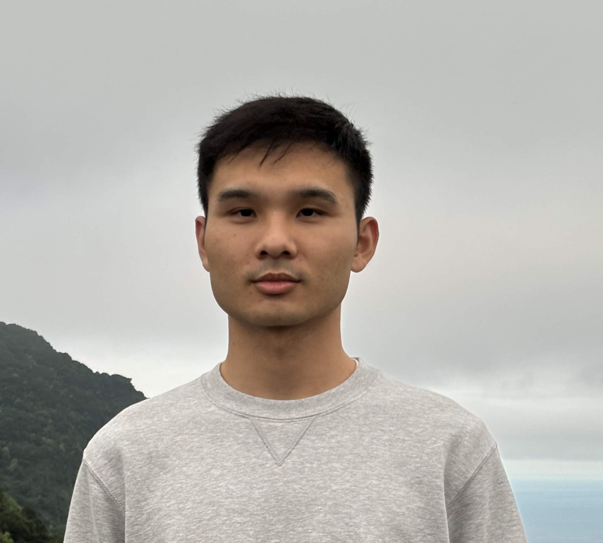

I am an Assistant Professor at the Institute for Theoretical Sciences, Westlake University. Before joining Westlake in 2025, I was a postdoc at City University of Hong Kong, hosted by Pierre Nolin and Wei Qian. I received my Ph.D. from Peking University in 2022 under the supervision of Xinyi Li and Fuxi Zhang, and my B.S. from Sun Yat-sen University in 2017.
My research is in statistical physics and random geometry, with particular interests in the Gaussian free field, Brownian loop soups, percolation, and Schramm-Loewner evolution.
Email: gaoyifan75 at westlake dot edu dot cn
Address: No. 600 Dunyu Road, Xihu district, Hangzhou, Zhejiang Province, China, 310030 (浙江省杭州市西湖区墩余路600号, 310030)
Office: 303, E14 Research Center (E14科研中心303)
